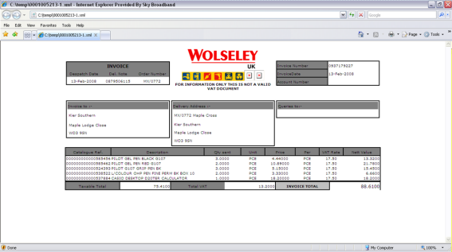

Viewing Invoice Messages
eInvoice Stylesheets
Every XML message can be seen on the workbench in a readable format by clicking the  button in the Render column. The XML is made readable by use of an XSLT Stylesheet. A standard stylesheet is used to render this image in a web browser. This stylesheet can be changed (by you, or as a chargeable service from ) to suit your needs.
button in the Render column. The XML is made readable by use of an XSLT Stylesheet. A standard stylesheet is used to render this image in a web browser. This stylesheet can be changed (by you, or as a chargeable service from ) to suit your needs.

It is possible to have a customed stylesheet for each . An example invoice using a Wolseley-specific stylesheet is shown here.

eInvoice Attachments
Some may send with the XML eInvoice one or more attached documents. This functionality is only available with XML messages coming from the ETC Hub. If these are available they are shown in the web browser when the Scanned Image button is pressed. Attached documents can be of any file type that can be rendered by the web browser, typically TIF or JPG files are used.